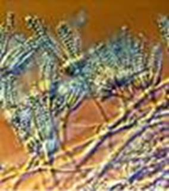
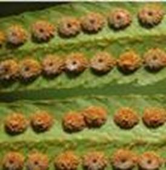
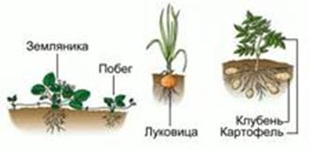
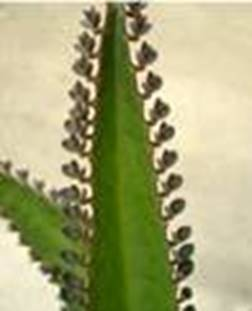
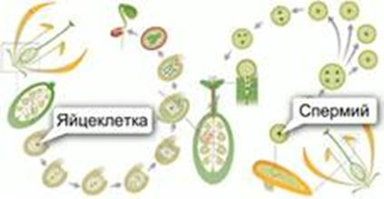
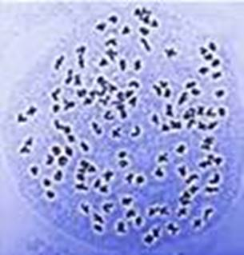
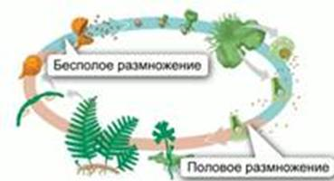
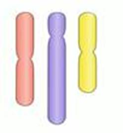
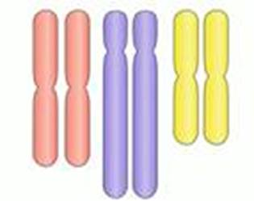

Общие сведения
В процессе жизнедеятельности растение накапливает разнообразные питательные вещества, а затем по достижении определенного возраста начинает размножаться.
Размножение – процесс, в результате которого происходит увеличение числа особей. У растений существует несколько способов размножения (см. Рис. 1).

Рис. 1. Размножение растений
Размножение спорами
Спорами (см. Рис. 2) размножаются грибы, водоросли, высшие растения.

Рис. 2. Споры
Споры бактерий – покоящаяся стадия, в которой бактерии переживают неблагоприятные условия.
Споры окружены плотной защитной оболочкой.
Спорангии – органы многоклеточных растений, приспособленные для образования спор.
Спорофит (см. Рис. 3) – растение, образующее споры.

Рис. 3. Спорофит папоротника
Споры отделяются от материнского организма и при попадании в благоприятные условия прорастают. Споры образуются в большом количестве, но прорастают немногие из них.
Вегетативное размножение
При вегетативном размножении растений новый организм развивается из клеток или частей вегетативных органов растений (см. Рис. 4).

Рис. 4. Органы, принимающие участие в вегетативном размножении
Высшие растения возможно размножать при помощи разделения их тела – черенков и отводок.
Черенки – отрезанные от материнского растения части вегетативных органов, которые способны к укоренению.
Некоторые растения плохо укореняются, поэтому их размножают отводками (крыжовник, шелковица). Для этого загибают и присыпают землей отдельные побеги.
Для других видов растений существуют специальные органы вегетативного размножения: усы земляники, выводковые почки каланхоэ (см. Рис. 5)

Рис. 5. Выводковые почки каланхоэ
Половое размножение
Половое размножение осуществляется при помощи специализированных половых клеток – гамет. Различают мужские гаметы (подвижные сперматозоиды, неподвижные спермии) и женские гаметы (яйцеклетки).
Гаметофит – растение, производящее гаметы.
Оплодотворение (см. Рис. 6) – процесс слияния мужских и женских гамет.

Рис. 6. Оплодотворение покрытосеменных растений
При слиянии гамет образуется зигота, из которой затем развивается новый организм. Он совмещает наследственные признаки обоих родителей.
Хромосомы (см. Рис. 7) – образования ядер, ответственные за сохранение и передачу наследственных признаков.

Рис. 7. Хромосомы
В результате случайной комбинации признаков родителей, у растения может появиться новый набор свойств. Некоторые из них могут оказаться полезными в условиях изменяющейся окружающей среды.
Чередование поколений
Для растений характерно чередование поколений в жизненном цикле (см. Рис. 8) – смена бесполых (спорофитов) на половые (гаметофиты) организмы.

Рис. 8. Жизненный цикл папоротника
Спорофиты папоротника – взрослые растения. Гаметофиты – заростки.
Гаметы и хромосомы
Гаметы гаплоидны (n) – содержат одинарный набор хромосом (см. Рис. 9). Также гаплоидны некоторые водоросли и грибы (хлорелла, мукор), все гаметофиты.

Рис. 9. Гаплоидный набор хромосом
Диплоидные (2n) – клетки с двойным набором хромосом. Обычно образуются в результате слияния гамет (см. Рис. 10).

Рис. 10. Диплоидный набор хромосом
Диплоидны спорофиты всех высших растений.
Полиплоидные – клетки с более чем двойным набором хромосом.
Бессемянные покрытосеменные
Бессемянные сорта винограда, цитрусовых, инжира размножаются только вегетативным путем. Часто эти растения триплоидны, потому не способны к половому размножению, так как гамета с полуторным набором хромосом не может существовать.
Наблюдение за размножением растений
Приведите примеры полового и бесполого размножения у известных вам комнатных и диких растений. Приведите наблюдение за размножением растений в природе. Сделайте рисунки или фотографии. Записывайте дату и время каждого наблюдения. Оформите наблюдения в виде дневника.
Список литературы
1. Биология. Бактерии, грибы, растения. 6 кл.: учеб. для общеобразоват. учреждений / В.В. Пасечник. – 14-е изд., стереотип. – М.: Дрофа, 2011. – 304 с.: ил.
2. Тихонова Е.Т., Романова Н.И. Биология, 6. – М.: Русское слово.
3. Исаева Т.А., Романова Н.И. Биология, 6. – М.: Русское слово.
Дополнительные рекомендованные ссылки на ресурсы сети Интернет
1. Scienceland.info (Источник).
2. Botanik-learn.ru (Источник).
3. Biolicey2vrn.ucoz.ru (Источник).
Домашнее задание
1. Биология. Бактерии, грибы, растения. 6 кл.: учеб. для общеобразоват. учреждений / В.В. Пасечник. – 14-е изд., стереотип. – М.: Дрофа, 2011. – 304 с.: ил. – с. 191, задания и вопросы 1, 2 (Источник).
2. Что такое гаметы? Что такое зигота?
3. Как происходит чередование поколений у растений?
4. * Подумайте, какой тип размножения является наиболее выгодным с точки зрения эволюции, приспособления к изменчивой окружающей среде. Ответ обоснуйте.